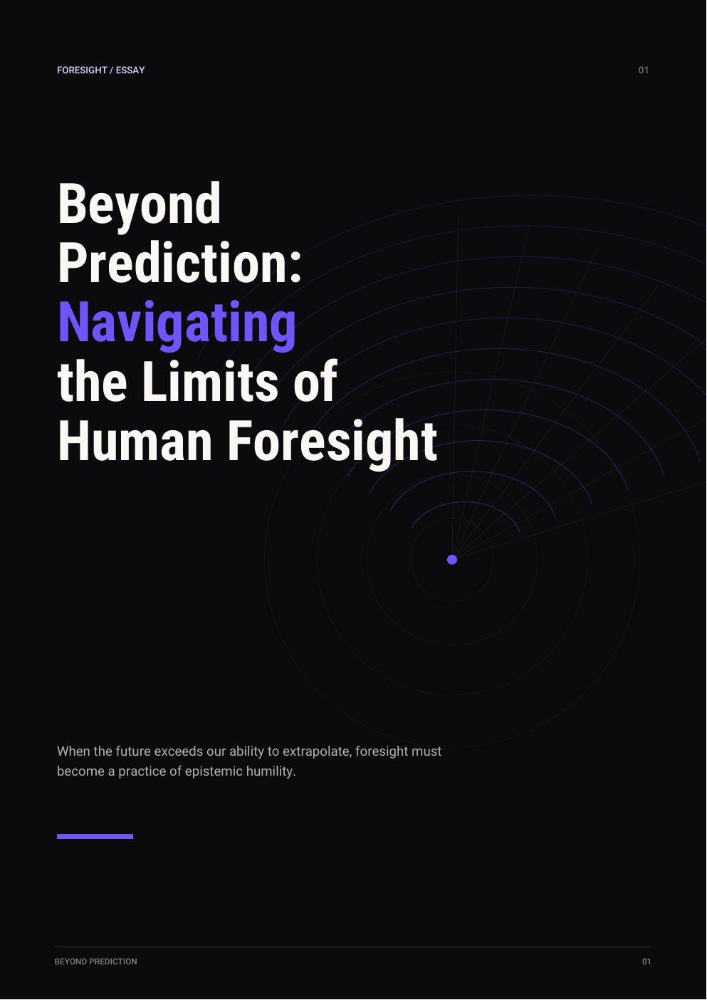

Beyond Prediction
Navigating the limits of human foresight.

The extrapolation problem
The future is not a trend line. Traditional foresight often assumes that tomorrow will remain legible through patterns extracted from yesterday and today. The essay asks what happens when technological change begins to exceed those assumptions rather than simply extend them.
The cognitive boundary
The deeper limit may not be computational at all. Human cognition filters complexity and relies on coherent conceptual frames. That makes radical novelty difficult not only to predict, but sometimes to recognise as a meaningful possibility.
The essay therefore points toward epistemic humility: treating uncertainty not as a temporary lack of data, but as a structural feature of trying to reason about futures created by systems more complex than the frameworks we currently possess.